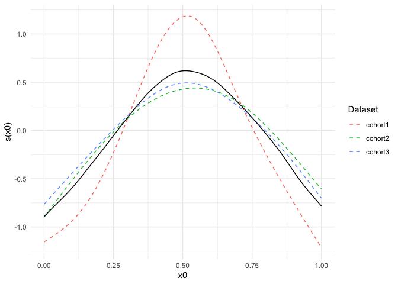

Overview
metagam is an R-package for flexible meta-analysis of generalized additive models (GAMs). Its main application is cases in which raw data are located in multiple locations, and cannot be shared due to ethical or regulatory restrictions. metagam provides functions for removing all individual participant from from GAMs fitted separately at each location, such that the resulting object can be shared to a central location. Next, metagam provides functions for meta-analysing these fitted GAMs using pointwise meta-analysis, as well as plotting and summary methods for analyzing the meta-analytic fits.
This package is under development, so changes to the interface can be expected. Suggestions for improvements and bug reports are warmly welcome, either by filing an Issue or opening a Pull Request.
Installation
Install the current development version of metagam from GitHub with:
Application Example
Assume some data of interest are located in three different cohorts. In order to increase statistical power and hence be more able to detect relationships in the data, we would ideally fit a GAM to all three datasets combined, using a model on the form y ~ s(x0) + s(x1) + s(x2), where y is an outcome of interest and x1 and x2 are explanatory variables. The smooth functions s() allow the outcome to vary nonlinearly as a function of each explanatory variable. When all three datasets are not available in a single location, we cannot fit a GAM using this mega-analytic approach. The metagam package provides a flexible solution to this problem, which here will be illustrated.
We start by simulation three datasets using the gamSim() function from mgcv.
library(mgcv)
## simulate three datasets
set.seed(123)
datasets <- lapply(1:3, function(x) gamSim(scale = 3, verbose = FALSE))In each data location, we assume a GAM with the generic form y~s(x0)+s(x1)+s(x2) is fit to the data. Notably, model parameters like knot locations, number of basis functions, and smoothing method does not need to be identical in each separate fit. Instead, the parameters can be optimized independently to fit the data in each location.
Here is an example:
## Data location 1
fit1 <- gam(y ~ s(x0, k = 8, bs = "cr") + s(x1, bs = "cr") + s(x2, bs = "cr"),
data = datasets[[1]])
## Data location 2, use P-splines for the first and third term
fit2 <- gam(y ~ s(x0, bs = "ps") + s(x1, k = 20, bs = "cr") + s(x2, bs = "bs"),
data = datasets[[2]])
## Data location 3, use maximum likelihood for smoothing
fit3 <- gam(y ~ s(x0, bs = "cr") + s(x1, bs = "cr") + s(x2, bs = "cr"),
data = datasets[[3]], method = "ML")The gam objects fit1, fit2, and fit3 contain individual participant data in various forms, and hence there are many cases in which these should not be shared. The function strip_rawdata() from metagam removes all such rawdata. We here illustrate how this function can be applied at each data location in order to obtain a model fit that can be shared.
## Data location 1
fit_no_raw1 <- strip_rawdata(fit1)
## Data location 2
fit_no_raw2 <- strip_rawdata(fit2)
## Data location 3
fit_no_raw3 <- strip_rawdata(fit3)Now assume that the objects fit_no_raw1, fit_no_raw2, and fit_no_raw3 have been gathered in a single location. We can now perform a meta-analysis of these fits using the metagam() function. We gather them in a list:
It is typically most convenient to analyze a single smooth term at a time. We start with the term s(x0), and set grid_size=100 to get 100 equally spaced values of x0 within the range of values encountered in the three model fits. The summary method prints out some information as well as meta-analytic p-values for the term.
metafit <- metagam(models, grid_size = 100, terms = "s(x0)")
summary(metafit)
#> Meta-analysis of GAMs from 3 cohorts, using method FE.
#>
#> Smooth terms analyzed: s(x0)
#>
#> Meta-analytic p-values of smooth terms:
#>
#> Test s(x0)
#> ---------------------- ----------
#> Stouffer's sum of z 0.0000143
#> Edgington's sum of p 0.0001186
#> Wilkinson's maximum p 0.0002717
#> Wilkinson's minimum p 0.0002545
#> logit p method 0.0000207
#> Fisher's sum of logs 0.0000191The default plotting function shows the fits on the separate datasets together with the meta-analytic fit.

For further documentation and vignettes, please visit the package website.